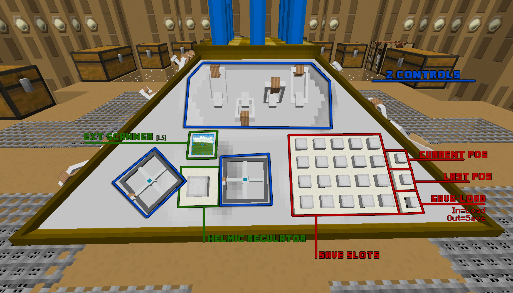

>
Front Side
Coord Mode Switch: Switches the coordinate system between absolute coords and relative coords. (In absolute mode, setting the controls to x=5,y=64,z=43 will move your TARDIS to 5,64,43. In relative mode, it will move your TARDIS along by 5,64,43)
Coordinate Wheel: Sets which direction the TARDIS should face when it lands.
Gauges: The 4 gauges tell you what your xp is, your energy, number of rooms and speed. Right clicking on each gauge will give more information.
Screwdriver Holder: Just a cosy place for your screwdriver (also where newly generated screwdrivers go and where screwdrivers can be converted to energy). Placing a screwdriver here also links it to this TARDIS.
Screwdriver Button: Generates a new screwdriver using TARDIS Energy or converts a screwdriver back to TARDIS Energy.
Speed Lever: Setting this lever controls the speed at which you fly through the temporal vortex.
Take Off Lever: Pulling this lever after successfully completing all the other steps of the take off sequence will cause your TARDIS to take flight towards its destination.
Right Side
X Controls: These controls set what X coordinate you should go when flying.
Coord Estimator: Right clicking this will cause your TARDIS to attempt to calculate what your destination will be. Initially, this could be up to 40 blocks away from where you end up landing, however, leveling up your TARDIS will cause this to be more accurate.
Infinite Flight Mode: Having infinite flight mode active (switch out) when taking off will cause your TARDIS to drift in the time vortex, allowing you to gain experience using the active flight controls and level up your TARDIS.
Stabilizers: Upon reaching level 11, you gain access to the stabilizers, which when activated (switch out), cause the TARDIS to pilot itself to its destination, causing a decrease in XP gain, but reducing hazards and work required.
Room Deletion Button: Right clicking this button and then sneak right clicking it will cause your TARDIS to begin destroying all of the rooms within itself, apart from the console room.
Back Side
Y Controls: These controls set what Y coordinate you should go to when flying.
Land Ground Control: When this control is active (switch out), your TARDIS will attempt to land on the ground, even if you have set the Y controls to be much higher than the ground.
Dimension Control: This lever sets which dimension your TARDIS will materialise in after flying.
Temporal Lockdown Switch: This control is part of the takeoff sequence and should be flipped after the Helmic Regulator is primed.
Interior Lighting Switch: Toggles the mood of lighting in rooms with a view to the interior dimension's sky.
Screwdriver Slot: A place to hold your screwdriver while you set what schematic is loaded on to it using the controls to the right. The screwdriver slot on the front will also get this schematic assigned to it, but this one's more convenient.
Schematic Selection Screen: Shows the name of the schematic which will be put on the inserted screwdriver.
Up-Down Controls: Cycles through the list of available schematics to be loaded onto the screwdriver.

Left Side
Z Controls: These controls set what Z coordinate you should go to when flying.
Helmic Regulator: The first step in the take off procedure.
Ext Scanner: At level 5, you get the ability to scan the 4 sides of the TARDIS exterior to determine whether or not it should be safe to step out the door, or if you should rotate the TARDIS to open the door to a safe side. Also has the added benefit of letting you know exactly what coordinates you've landed at.
Save-Load: When activated (switch out) this switch allows you to save your current controls into one of the 20 save slots just to the left.
Current Pos: Sets your controls to the control state which resulted in you landing at your current location.
Last Pos: Sets your controls to the control state that resulted in you landing at your previous location.
Save Slots: When the Save-Load switch is activated, activating one of these switches will save your current control set to one of these buttons. When the Save-Load switch is not activated, activating one of these switches with a saved control set will set your controls to that control set.